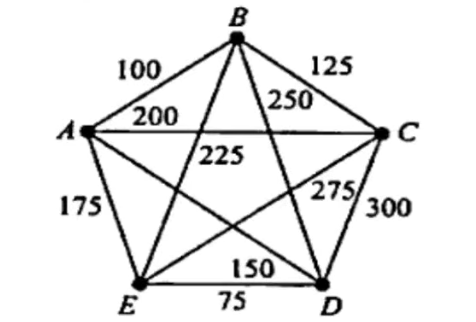
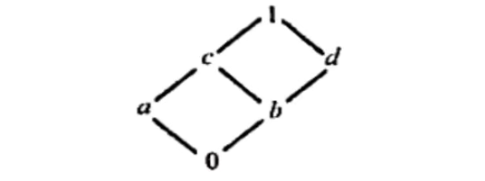

B.Tech. III Semester
Examination, June 2023
Grading System (GS)
Max Marks: 70 | Time: 3 Hours
Note:
i) Attempt any five questions.
ii) All questions carry equal marks.
a) Prove that $P(A) \subseteq P(B)$ if and only if $A \subseteq B$. (Unit 1)
b) Suppose that $R$ is the relation on the set of strings of English letters such that $aRb$ if and only if $l(a) = l(b)$, where $l(x)$ is the length of the string $x$. Is $R$ an equivalence relation? (Unit 1)
a) Illustrate the concept of an inverse function. Let $f : Z \to Z$ be such that $f(x) = x + 1$. Is $f$ invertible? if it is then what is its inverse? (Unit 1)
b) Define group. Explain the properties of groups. (Unit 2)
Let $S = N \times N$. Let $*$ be the operation on $S$ defined by $(a, b) * (a', b') = (aa', bb')$.
i) Define $f : (S, *) \to (Q, \times)$ by $f(a, b) = a/b$. Show that $f$ is a homomorphism.
ii) Find the congruence relation $\sim$ in $S$ determined by the homomorphism $f$, that is, where $x \sim y$ if $f(x) = f(y)$. (Unit 2)
a) Show that the $((p \lor q) \land \neg p) \to q$ compound proposition is a tautology. (Unit 3)
b) Use existential and universal quantifiers to express the statement. "No one has more than three grandmothers" using the propositional function $G(x, y)$, which represents "$x$ is the grandmother of $y$." (Unit 3)
a) Discuss the 6 tuple notation of finite state machine $M$ with an example. (Unit 3)
b) Consider the complete weighted graph $G$ in the following figure with 5 vertices. Find a Hamiltonian circuit of minimal weight. (Unit 4)

a) Discuss the various applications of graph colouring. (Unit 4)
b) State Euler’s formula for a planar graph. Give an example of a planar graph with 5 vertices and 5 regions and verify Euler’s formula for your example. (Unit 4)
a) Consider the set $A = \{4, 5, 6, 7\}$. Let $R$ be the relation $\le$ on $A$. Draw the directed graph and the Hasse diagram of $R$. (Unit 5)
b) Consider the lattice $M$ in the following figure. (Unit 5)

i) Find the non-zero join irreducible elements and atoms of $M$.
ii) Is $M$ distributive and complemented?
Discuss in brief any two of the following:
i) Partial ordering relation (Unit 1)
ii) Cosets (Unit 2)
iii) Disjunctive normal form (Unit 3)
iv) Pigeonhole principle (Unit 1)